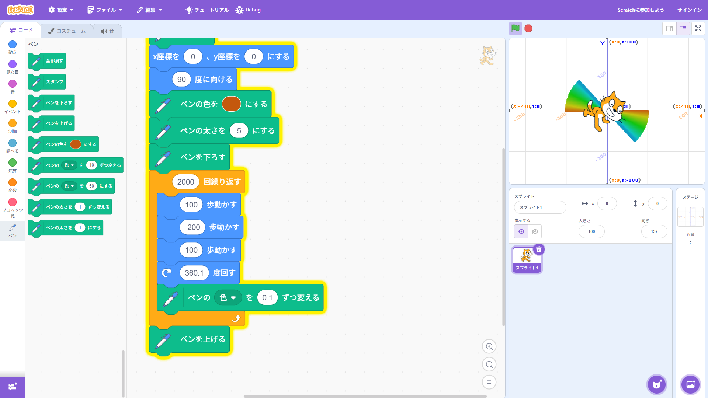
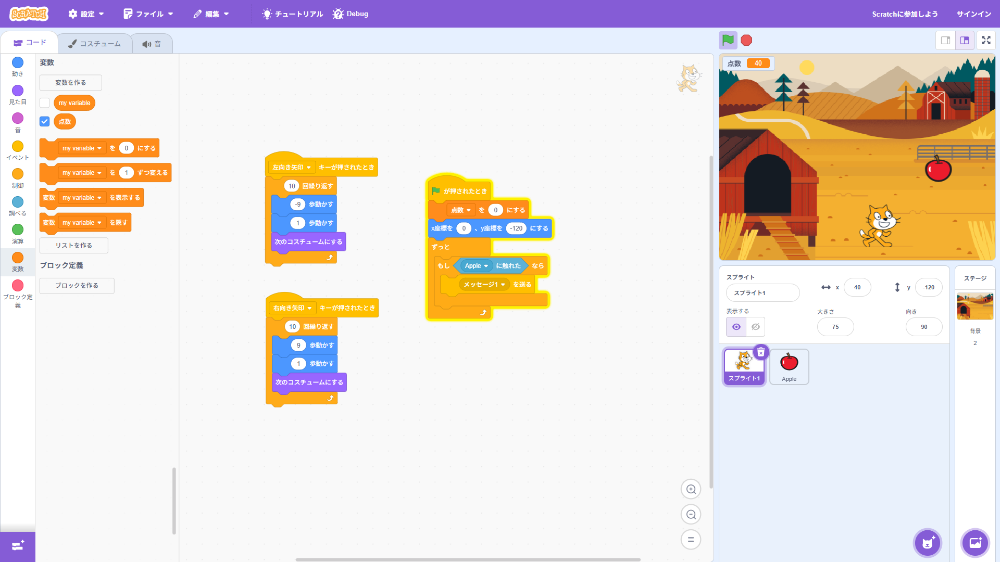

1週目のレポート ： 公大高専１年実習I-1
3a班18番 namuru841
第1週目
1-1 サイエンスアート

1.内容
スクラッチのペンを利用して、スクラッチが移動すればそのあとに線が出るようになっている。
これを利用して、写真のような図形を作成した。
2.感想
移動するたびに色を変えたり、角度を変えたりして様々な工夫をすることで全然違った面白いものができた。
角度を変えたり進む距離を工夫することできれいな図形ができたり、変な図形ができたりして楽しかった。
1-2 ゲーム

1.内容
落ちてくるリンゴをキャラクターがキャッチして、キャッチするごとに、ポイントが増えるようなゲームを作成した。
右矢印を押すと右に、左矢印を押すと、左に移動するようなプログラムになっている。
2.感想
自分で作ったゲームを自分で遊べて楽しかった。
制限時間を設けるなどもっといろんな工夫をして、自分の独自のゲームを作成してみたいと感じた。
1-3 ホームページ作成
私のホームページ
1.内容
githubというサイトを使って自分のホームページを作成した。ホームページには、自分の簡単な自己紹介や、
趣味、特技などを記載した。
2.感想
ホームページの作り方を知ることができた。この授業を学ぶ前は、ホームページは難しいものだと思っていたが、
意外と気軽に作れるんだなと思った。もっと工夫してみたいなと感じた。
各ページへのリンク
1週目のレポート
2週目のレポート
3週目のレポート
私のホームページ